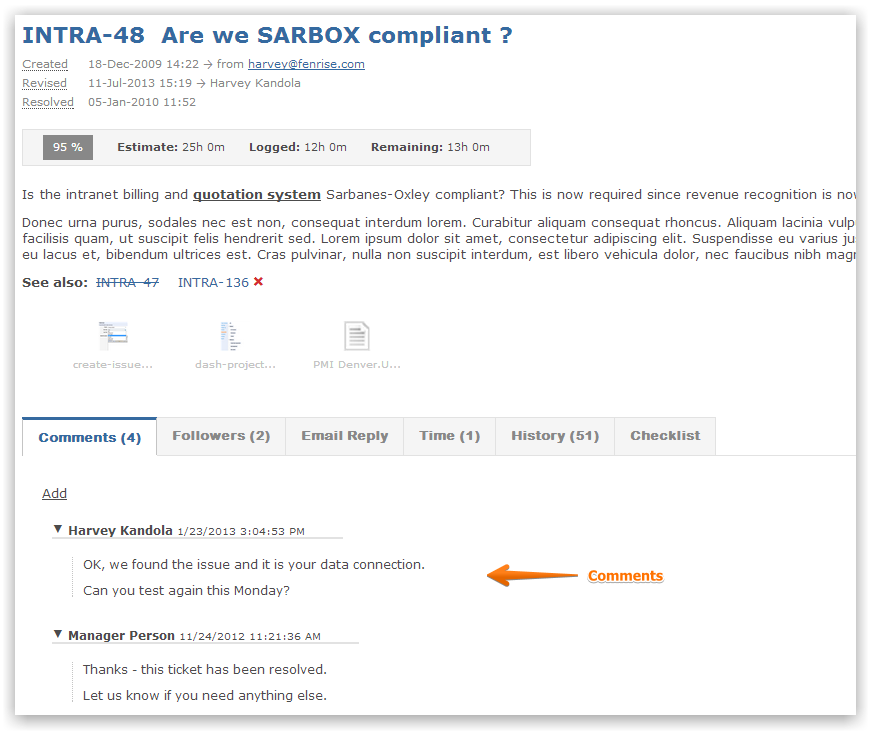
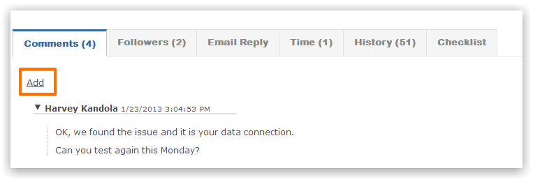
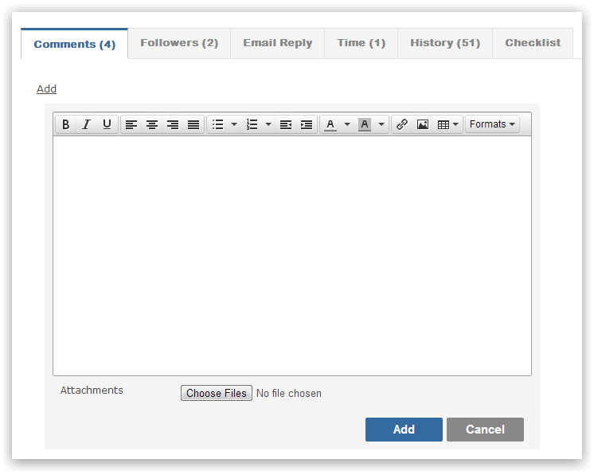
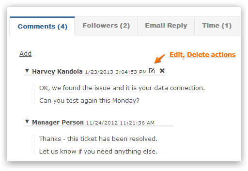
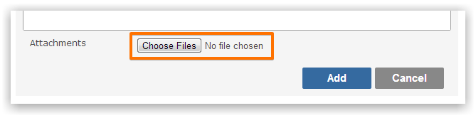

Every item can have comments to aid co-worker collaboration and to provide additional commentary on the item.

Click the add button to create a new comment.

The comment supports rich text entry with an expandable toolbar.

Just like popular word processing software, you can highlight text and press CTRL-B to make the selected text bold.
A comment can be changed or deleted by hovering over the comment.

Every comment can have multiple attachments. Note this is in addition to the unlimited file attachments at the item level.

Select the files from your desktop and upload.